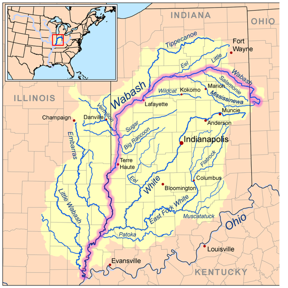

Chart #186 on Rootsweb compiled by Marilyn Horton with over 70 Frenches
This ancestry shows more names than details.
1790 Kentucky Map (can be
enlarged over 200%)
FFA Charts Related To This Chart
History and Background
The Surname Fielding
Index
Bibliography
DNA Test Data for Isaac French
DNA Test Group 4 Test Results (old
website)
DNA Test Group 4 Test Results (new
website)
DNA Test Group 4 Lineages
DNA Test Group 4 Cross-Reference Chart
DNA Test Group 4 Blog
DNA Test Group 4 Descendant Chart to Testee
DNA Group 4 Analysis
DNA
Testing
Philip French Genealogy
This ancestry shows more details of early Frenches
than names.
Proposed Lineage
Who Was Philips Father?
First thru Fourth Generation
Fifth Generation
Sixth Generation
Seventh
Generation
Eighth Generation
In
Appreciation
Marilyn Horton has researched a tremendous amount on Philip
French for many years. She is a great encouragement to this family in spite of
health issues. Marilyn plans to transcribe Philips probate record.
Foreword
Ive researched this line just about all I can from
ancestry.com and from the internet. Additions need to
come from family members or from local books or historians who havent put
their information online.
P.S. Although Philip French is not of my line, I will
continue to do research on him as time permits. My line is FFA Chart #6.
FFA
Charts Related To This Chart
FFA Chart #10,
John Peter French and William Lewis French – DNA Test Group 4
FFA Chart #23,
Isaac French – DNA Test Group 4
FFA Chart #30,
Louisa French – no test
FFA Chart #31,
Henry French – DNA Test Group 4
FFA Chart #66,
Samuel French (perhaps)
FFA Chart #129,
Peter French – no test
FFA Chart #136,
George French – DNA Test Group 4
FFA Chart #186,
Philip French – DNA Test Group 4
FFA Chart #193,
David French – DNA Test Group 4
FFA Chart #194,
Jonathan French – DNA Test Group 4
FFA Chart #195,
Jacob French – DNA Test Group 4
The DNA expert and
administrator for the surname French is Julia French Wood. Email her about all
DNA questions to JuliaFWood@aol.com.
For ancestry questions, email marafrench@mindspring.com.
History and Background
Jacob French (FFA Chart #195),
Louisa French (FFA
Chart #30), George French (FFA Chart #136),
and John French (FFA
Chart #129) were most likely 4 children of John French who was the first of
this French family in the U.S.; namely, in Pennsylvania. John French, b. 1705,
immigrated to PA in 1728. For more details, see FFA Chart #195.
Who Was Philips Father?
Some facts and hypotheses that Ive gathered:
From the group of French men in DNA Test
Group 4, and assuming
Philip would have to come from one of those men on the list above, we could eliminate a few and work
with the ones that are left.
Jacob French, b. ca. 1730, had son John
(Philip) French, b. ca. 1753, who m. Catherine Hedges, FFA Chart #194.
He moved to KY. He died in 1791 and may have had son Philip in 1790. Catherine
m2. Henry Daugherty in 1792 – is this date correct? Henry Daugherty or
Dougherty does not appear in the 1800 census in KY. In the 1810
census of Washington, KY, Philip is not living with him.
David French, b. ca. 1762, moved to KY, FFA Chart #193.
He m. in 1790, and Philip may have been his first son. David did have more
sons; namely Samuel S. French and David Shively French, which would even more
indicate that David was Philips father.
Some of Philips children have very different
names other than we have seen in DNA Test Gp 4. Names
such as Warner, Susan, Margaret,
Malinda, Sarah (1), Lovis,
Prior or Pryor, Jacob, Felix, Fielding, Isaac, Elizabeth, and Sarah
(2). These names could be from the Randall family, the surname of Philips
wife. It is strange that there are no names such as Henry, George, or John or
even David.
Notice that the name Warner is nowhere to be
found in the Randall nor French family because his
name is from Philips first wife. The surname Warner is prevalent in Kentucky
ca. 1790, as is the Christian name Warner. Philips first wife may have died in
childbirth with son Warner in 1812. Looking in particular at Mercer or
Jefferson Co., KY, the 1810 census shows George Warner in Mercer Co., KY; also
John Warner and Peter Warner in Lincoln, Lincoln Co., KY. Philips first wife
would have been ca. 15 in the 1810 census, and the Mercer Co. census shows a
female of that age. David French of FFA Chart #193, had a son named David
Shively French, b. 1799 in KY, who named his son Warner who was b. 1842
in KY. This Warner also had a brother named Humphrey
which would really indicate that David was closely related to Philip.
Sarah Randall, wife of Philip, was the daughter of Felix
Seymour Randall. According to the 1850 U.S. Federal Census of Virginia,
Felix Seymour (surname is Seymour, not Randall) owned 26 slaves, female and
male, mulatto and black, from ages 15 to 80.
The name Pryor comes from Sarah Randalls
mothers family, as Pryor Robey was her grandfather.
Henry (b. 1755) and Elizabeth (Ersom)
French of FFA Chart #31 married about in 1772 when Henry was only 17, and in MD
or VA. They migrated to Kentucky in 1773 and received a land grant. Their son George W. French m. Elizabeth Sturman
in 1804. She was the daughter of Thomas Humphrey Sturman and Mary Lewis. George and Elizabeths son was
Henry Fielding French. They also had another son named Humphrey Sturman French, b. 1805 in Mercer Co., KY. Henry French, b.
1755, is listed in a court order book in Mercer Co., KY on 25 Aug 1791, shortly
after 1790 when Philip was born. Philip must have been closely related to the Sturman line indicating that his first wife may have been a
Sturman.
Proposed Lineage
Researchers: This is a complete hypothesis.
Ill be working on this lineage and get more sources.
3.5 John
French, FFA Chart #194, b. ca. 1750, m. Catherine
Hedges. He did not remain in Berkeley Co., WV, but moved to KY. John died in
Lincoln Co., KY on 21 May 1792, age ca. 40. Catherine then
m2. Henry Daugherty.
4.1 David French, FFA Chart #193, b. 1766 in Berkeley Co.,
WV, lived in Jefferson Co., OH and Daviess Co., KY, then migrated to Ohio Co.,
KY, m1. Margaret Shively (a German name) on 20 Dec 1790 in Jefferson Co., KY,
d. 29 Dec 1819 in Ohio Co., KY, his son David Shively, his son William Henry,
his son David Shively, his son Felix Latney (DNA Test 10303). David m2. Rebecca Sturman Hudson in 1816, daughter of Thomas Humphrey Sturman and Mary Lewis.
5.1 Philip French, FFA Chart #186, b. 3 Mar 1790 in KY, m. Sarah
Randall on 12 Aug 1813 – she was from Butler Co., OH, his son Warner, his
son George, his son William Albert, his son Wayne Hathaway, his son Warren
Wayne French
(DNA Test 176015). (we are still searching to find a document that will prove or
disprove Philips ancestry.)
For
the following children, see FFA Chart #193.
5.2 Samuel S. (Shively?) French, b. 1797 in
KY, m1. Frances (Fanny) Hudson, m2. Mary E. Bartlett.
5.3 David Shively
French, b. 11 Jun 1799 in Ohio Co., KY, m. Ann Hudson.
5.4 George French, b. 1808 in Ohio Co., KY.
5.5 John French, b. 1810 in Ohio Co., KY.
First
thru Fourth Generation
John French – Davids great-grandfather, b. ca.
1705, FFA Chart
#195
Jacob French – Davids grandfather, b. ca. 1730, FFA Chart #195
John French – Davids father, b. 1750, m. Catherine Hedges, FFA Chart #194
David French – b. 1765, FFA Chart #193
Philip French – b. 1790
Fifth Generation
We are starting with the 5th generation in order to keep the
generations consistent with DNA Test Group 4.
Philip below could have been named John Philip French, as
many Germans in Pennsylvania gave their son the name John (and a Christian
name) and their daughters the name Mary (and a Christian name).
Also, Philip is spelled many times using 2 Ls. Im spelling
it consistently using only one, but using two when Philip is used as a surname.
5.1* Philip French, b. 3 Mar 1790
in VA in the part that is now KY; namely Jefferson Co., KY, m1. Unknown, m2. Sarah Randall on 12 Aug 1813 most likely in
Butler Co., OH, as the Randall family never lived in Kentucky, but migrated
from VA straight to OH. Sarah Randall was from Hardy Co., VA, formerly called
Hampshire Co., VA. In 1820 they moved to Vermillion Co., IN, and Philip died
there on 31 Mar 1847 in Helt, Vermillion, IN, and is
buried at the Trowbridge Cemetery in Hillsdale, IN.
The following early Frenches
were found in Butler Co., OH, on ancesntry.com. Philip may have moved there to
join one of them. Butler Co. is a very southerly county, close to Cincinnati
and also Kentucky. Philip French left Butler Co. in 1823 and moved to
Vermillion Co., IN.
William French who was b. 1772 in Connecticut
and appears in the 1850 census in
Butler Co., OH. He is from FFA Chart #191.
Samuel S. French was b. ca. 1829 in Butler Co.,
OH; he was not one of Philips children, but he could easily be his nephew, and
his father could have been Samuel S. French, a brother to Philip. Samuel S.
French had registered for the draft just before the Civil War in 1863 when he
was a farmer and married. He is from FFA Chart #194.
Also registered was Charles French, b. 1829 in
PA, living in Butler Co., OH, who was a minister and married.
Also N. G. French, b. 1834 in OH, a married
farmer.
Marriage
Philip French m1. _______ in Kentucky and had son Warner (perhaps a name connected
with his first wife). In the 1850 census, Philips son Warner was living
in Pike, Warren Co., IN, and states he was born in Kentucky. This is a pivotal
point, because Philips second wife never lived in Kentucky. Therefore, Philip
must be listed in the 1800 and 1810 census in Kentucky. Looking
first at the 1810 census, only 2 years before his son Warner was born
ca. 1812 in Kentucky, during the War of 1812, he may have lived with:
Henry French in Mercer Co., KY (only 1 male of that
age and that was his son John who was not yet head of household, married in
1813);
Henry French in Jefferson Co., KY (second home of person above);
David French in Jefferson Co., KY (no male of that age).
In the 1800 census, Philip would have been 10
years old, living in KY. Philip would have been 20 years old in 1810,
still living in KY. It appears he did not live with any of these families;
therefore, he may have lived with his first wifes family or with Samuel who
may be his brother.
Philip moved to Butler Co., OH, between 1812 and 1813,
perhaps near other French relatives, but what caused him to move to Butler Co.?
Note that a Samuel and Martha French had 2 daughters in OH in 1824 and 1827
before moving to Vermillion Co., IN, but the Samuel S. French that we have
researched was married to Nancy Ann Ingram and lived in Vermillion Co., IN.
This research will be completed in FFA Chart #194 very soon.
To determine the name of Philips first wife, we may
look at the name of their son Warner used as a Christian name and surname. Or
we may look at the names his first son Warner gave his children by his Warners
first wife. They are:
Warner -- David French, FFA Chart #193, who
married Margaret Shively, had son David Shively French who named his son Warner
Lewis French, b. 1842 in Ohio Co., KY.
William Doel --
This is all hypothetical, but certainly the name Doel
is important in Warner Frenchs family after giving his first son that name,
but also, the name Doel does not appear in the French
family other than Warners family, indicating it could be a name from his wife.
William could be William Lewis French of FFA Chart #10. Considering the name Doel, John Robinson was b. ca. 1780, the son of Doel and Margt Robinson,
and died in Boone, KY, on 6 Oct 1855. In the 1810 census, John Robinson
was living in Stoner, Bourbon Co., KY. He was living with his wife, and a daughter
aged 15, who could have been Philips first wife. He also had 31 slaves. Also,
Nicholas Yeager was b. 3 Sep 1784 in TN, m. Polly Robinson and moved to
Lexington, Kentucky in 1808, and then moved to Middletown, Butler Co., OH in
1809. The Yeager family was from Germany who emigrated to Virginia ca. 1750.
Polly Robinson had brothers, Samuel and John Robinson, who lived near
Louisville, KY. But a more accurate attempt would be to use Doel
as a surname, as many middle names were family surnames, as mine is. A Doel family lived in Pendleton, KY, but not until 1860.
The name could have also been spelled Doyle. Elizabeth Doell,
born in Germany, was living in Louisville, Jefferson Co., KY, in 1870;
Philip named his first daughter Elizabeth. Catherine Robinson was born 15 Dec
1797 and d. 2 Jul 1817 in Charrolton, Carroll Co.,
KY, just NE of Louisville. Hopefully someone can resolve this issue and email
me at marafrench@mindspring.com.
Humphrey - the name of George W. French and
Elizabeth Sturman's son Humphrey Sturman
French, b. 1805 in Harrodsburg, Mercer Co., KY. Elizabeth Sturman's
father was Thomas Humphrey Sturman.
George -- perhaps after George W. French who m. Elizabeth Sturman who lived
in KY.
Philip French m2. Sarah
Randall on 12 Aug 1813 probably in Liberty, Butler Co., OH. Sarah was b. 12
Oct 1793 in Mooreville, Hardy Co., VA, formerly
called Hampshire Co., VA, d. 10 Sep 1880 at age 86. Felix Seymour Randall,
Sarahs father, is on the Butler Co., OH, Tax List of
1807. This definitely indicates that the Randall family preceded the French
family to Butler Co., OH, and that they met there and not in Kentucky.
Randall Family
1. Abel Randall, b. 21 Feb 1727 in Gloucester Co., NJ, m.
Catherine Rennick.
2. Felix Seymour Randall, b. 20 Mar 1765 in Hardy Co., VA, m.
Melinda Robey.
3. Sarah Randall, b. 12 Oct 1793 in Mooreville, Hardy
Co., VA, m. Philip French.
Sarah Randall was the daughter of Felix Seymour Randall. Felix was
b. 20 Mar 1765 in Hardy Co., VA, formerly called Hampshire Co., VA, and d. 14
Feb 1833 in Vermillion Co., IN, and might have been buried at the Friends
Chapel Cemetery in Scottland, Edgar Co., IL, next to
Vermillion Co., IN. In this cemetery are members of the Ingram family who could
be related to this family through Samuel French who married Nancy Ingram.
Sarahs mother was Melinda Robey, b. 26
Oct 1770 in Hampshire Co., VA, and married on 6 Jan 1791 in Moorefield, Hardy
Co., WV, formerly called Hampshire Co., VA.
Until 1863, the area now known as West Virginia was part of the
Commonwealth of Virginia. Moorefield West Virginia is the county seat of Hardy
Co., WV, formerly called Hampshire Co., VA, and is about 125 miles straight
west of Washington, D.C [17].
Felix Seymour Randall is listed in the 1800 census of
Wallkill, Orange Co., NY with a family of 9, and in the 1820 census in
Liberty, Butler Co., OH, also with a family of 9 (some new births and others
like Sarah had left home). In the 1830 census, he is in Vermillion Co.,
IN. Felix was one of the first pew holders in the Scotchtown Church, Orange
Co., NY, ca. 1796. None of the other names on the list
tie into the French family; therefore, we believe the Randall and French
families met each other in OH, see Ref. [13], and not in Kentucky.
Felix Seymour Randall and Lynder Robey had 10 children: Jacob; Susanna; Sarah b. 12 Oct
1793, d. 15 Sep 1880 in IN; Abel; Pryor S.;
Catherine; William; Sudner; Delila;
and George.
Sarahs grandfather on her fathers side was Abel Randall (the
father of Felix Seymour Randall), b. 21 Feb 1727 in Gloucester Co., NJ, and d.
22 Jul 1792 in Hardy Co., VA, formerly called Hampshire Co., VA. He m.
Catherine Rennick who was b. 1742 in Paxtang, Lancaster Co., PA and d. 3 Jul 1791 in Hardy,
Bedford Co., VA. So, here is another family from Lancaster Co., PA, as was the
French family of DNA Test Group 4. See Descendants
of the Randall family [17]. Search for more here: http://familytreemaker.genealogy.com/users/r/a/n/Bill-S-Randall/PDFGENE1.pdf.
Abel Randall, Felix Seymour, and
eight others signed and sent a petition to the British Governor Botetourt in
Williamsburg in December of 1769. They asked to "take leave up and survey
60,000 acres of land to begin at the Falls of the
Cumberland River and extend down the said river". This was approved and in
May 1773, Colonel Hite's son, Isaac Hite, brought a party of six men from South
Branch and sailed down the Ohio River from Pittsburgh to Louisville. They surveyed enormous tracts in central Kentucky
along the Salt River, the Kentucky River, and the Ohio River west of the Falls (near Louisville). They returned for another survey
trip in April 1774. These surveys prompted several Moorehead
VA residents to move the Scioto Valley of Ohio beginning in 1803 when Ohio
became a state. Abel Randalls son, Felix and family moved to Butler Co Ohio
about 1803 - Butler Co is about 100 miles west of the Scioto Valley of Ohio.
(History of Hardy Co page 62-64)
Abel Randalls brother-in-law was Felix Seymour. In other words,
Abels wife, Catherine Rennick, had an older sister
named Margaret Rennick who married Felix Seymour.
Able Randall d. 22 Jul 1792. His will listed his children: Alexander, Jacob,
Felix, Mary, and Catherine. Daughter Sarah Randall had died in 1787. Not named
in Abels will were children Margaret, Julia, Elizabeth, Ruth, and George.
Felix Seymour came from Ireland and his family traced their roots back to the
year 710. Jane Seymour was the wife of King Henry VIII. Abel and Catherine (Rennick) Randall named their third son Felix Seymour
Randall after Catherines distinguished brother-in-law, Felix Seymour. Felix
Seymour Randall was b. 20 Mar 1767 in Hardy Co., VA, d.
14 Feb 1833 in Vermillion Co., IN. Felix was a twin with sister Julie.
In Sep 1797, Felix Seymour Randall sold 233 acres of land in Hardy
Co. in anticipation of moving to Ohio. They moved NW to Harrison Co., VA, ca.
1798 and to Hamilton, Butler Co., OH, ca. 1803. Then in 1823, they moved to
Vermillion Co., IN.
Related Line: Alexander C. Randall, m. 31 Aug 1856 in Helt, Vermillion Co., IN, to Emeline French. Emeline was the
daughter of Samuel and Martha French. Samuel could have been an uncle of Philip
[17]. According to the 1860 census of Cambridge, Henry Co., IL, Emeline was b. in 1825 in PA. She and Alexander were living
there with their 4 children. Three of their children were Hester, Martha &
Leonard. Either Alexander died or they divorced as Emeline
married Henry Long in 1874. Another Emeline
French who m. Boggs, was b. Jun 1851, d. 26 Oct 1881, and is buried at the
Woodland Cemetery in Chrisman, Edgar Co., IL. Alexander C. Randall, b. ca.
1835, was the son of Abel Randall and Mary Ulm, and the grandson of Felix
Randall and Malinda Robey, making Alexander a nephew
of Sarah Randall French.
Children
Philip and Sarah had about 14
children, the exact number is unknown. Two of
their children, Susan and Prior, died in 1839. Lovis
died at age 30, Prior died at age 14, and Isaac died at age 24. Three sons
continue this line: Warner, Jacob, and Felix. His sons Warner and Humphrey
might lead us to his ancestors. George Washington French, FFA Chart #31, who
was b. 31 Mar 1782 in KY, named one of his sons Humphrey, who was b. 1805 in
Mercer Co., KY. No other French of DNA Test Group 4 named a son Humphrey; that
is because the name Humphrey is from the Sturman
family. FFA Chart #31 also has a Warner in that line. David French, FFA Chart
#193, who married Margaret Shively, had son David Shively French who named his
son Warner Lewis French, b. 1842 in Ohio Co., KY. Philip must fit in with
either FFA Chart #31 or #193 or both.
Census Records
Ohio Census. In 1790, Ohio was still in what
was known as Northwest Territory. 1790 census enumerators did not enter this
hostile territory to take the census so there is not a 1790 Federal census for
the area that was to become Ohio Territory in 1799. 1800
& 1810 Federal censuses were taken in Ohio but the only surviving fragments
are for Washington County, OH. What exists of these early Ohio census records are included in the 1790-1890 Ohio Census Collection at Ancestry. Census
records are available in Ohio from 1820 onwards, except for 1890
which were destroyed by a fire.
1810 Census, Philip was 20 years old, had not
yet married, whereabouts unknown. He probably married the next year and could
have been living with her family in Kentucky as his son Warner was born in
1812.
1820 Census of Liberty, Butler Co., OH,
children = 1 male, 4 females
1 male under 10, born 1810-1820 (Warner, b. 1812)
1 male 26-44 (Philip French, age 30)
4 females under 10, born 1810-1820 (Susan, Margaret, Malinda, unknown)
1 female 16-25 (Sarah Randall French)
1830 census of Vermillion Co., IN, children =
3 males, 7 females
Apparently Warner was not living at
home, he married in 1829.
3 males under 5, born 1825-1830 (Felix, Jacob, Prior)
1 male 40-49 (Philip French, age 40)
3 females 5-9, born 1821-1825 (Lovis, unknown,
unknown)
2 females 10-14, b. 1816-1820 (Malinda, unknown)
1 female 15-19, b. 1811-1815 – (Margaret)
1 female 20-29, b. 1801-1810 – (Susan)
1 female 30-39 (Sarah Randall French)
Two of their children, Susan and Prior, died in 1839.
Lovis died at age 30, Prior died at age 14, and Isaac
died at age 24.
1840 census of Helt,
Vermillion Co., IN, children = 5 males, 5 females
1 male under 5, b. 1836-1840 – (Isaac French)
1 male 5-9, b. 1831-1835 – (Felix French)
2 males 10-14, b. 1826-1830 – (unknown and Jacob) 1850 census
1 male 20-29, b. 1811-1820 – (unknown)
1 male 50-59, b. 1790-1799 – (Philip French)
2 females under 5, b. 1835-1840 – (Sarah E. and Elizabeth French)
2 females 15-19, b. 1821-1825 – (Malinda and Lovis
French)
1 female 20-29, b. 1811-1820 – (Margaret French)
1 female 40-49 (Sarah Randall French)
(eldest daughter Susan died in 1839)
Son Prior died in 1839.
1850 census. Philip d. before 1850 because he
is not in the census with Sarah, age 56, in Helt,
Vermillion Co., IN.
Sarah French, age 56, therefore born 1794
Felix French, age 21, therefore born 1829
Isaac French, age 19, therefore born 1831
Elizabeth French, age 16, therefore born 1834
Sarah E. French, age 13, therefore born 1837
William Ingram, age 13, therefore born in 1837
1860 census of Helt,
Vermillion Co., IN
Sarah French, age 63
Sarah Ellen French, age 22, born 1837
Felix French, age 29, born 1830
Elizabeth French, age 7, b. 1853 (granddaughter)
William French (or William Ingram), age 22
1870 census of Helt,
Vermillion Co., IN
Sarah French, age 76 (living alone)
1880 census of Helt,
Vermillion Co., IN
Sarah French Bonwell, age 86
According to the 1880 census of Helt, Vermillion Co., IN, Sarah married again after Philip
died in 1847. She married James Bonwell as she is
listed in 1880, age 86, widowed, living with some of her French children and
using the name Bonwell. She states that both of her
parents were born in Virginia, which record is accurate. She died later that
year on 10 Sep 1880. James Bonwell was b. 6 Oct 1798
in KY and d. 2 Jan 1875 in Scottland, IL, and is
buried at the Friends Chapel Cemetery in Edgar Co., IL. His family lived in
Prairie, Edgar Co., IL, see Ref. [16], as well as the French and Randall families.
Fielding (Felix) French (her son), age 57,
therefore born 1823
Nancy French, age 35, born 1845, wife of Felix
Isaac French, age 17, born 1863, son of Fielding and Nancy French
Mary E. French, age 16, born 1864, son of Fielding and Nancy French
George E. French, age 11, born 1869, son of Fielding and Nancy French
Sarah Bonwell, age 86, born 1794, Sarah Randall
French Bonwell
John Bonwell, age 16, born 1864 in Illinois; father
born in Ohio, mother in Indiana
Land Deeds
Philip is listed as an original landowner in
Vermillion Township, section 15. The land consisted of 80 acres. His land was
directly south of where Highfill Cemetery is today
(then owned by Jeremiah Highfill). No date is given. (Source - Newport & Vermillion Township - The First 100 Years 1824-1924,
published in 1969). The Highfill Cemetery is
located at Highfill Chapel Road in Indiana [17]. The
A points to Highfill Chapel Road. Nearby French
Lick was named after French traders who first settled in region in 1800; John
French, b. 1760, FFA
Chart #194, was also from this area.
The following certificate below, albeit hard to read,
shows Philip French of Vermillion County, IN, deposited a certificate of the
Register of the Land Office at the General Land Office of the United States,
whereby it appears that full payment has been made by the said Philip French
according to the provisions of the Act of Congress of the 24th of
April 1820, entitled An act making further provision for the sale of the
Public Lands, for 80 acres.

Philip French is listed at the U.S. General Land
Office on 15 May 1837 as owning 80 acres of public land in Crawfordsville,
Vermillion Co., IN, which he had bought as a cash sale on 24 Apr 1820. Section
27, Twp 16-N, Range 9-W, Meridian 2nd PM, in Vermillion County.
Death
Philips gravestone indicates he died on 31 Mar 1847
at 57 years old and 28 days. Using the calculator at this website: http://www.timeanddate.com/date/dateadd.html,
Philip was born on Wednesday, March 3, 1790. He died in Vermillion Co., IN, and
was buried at Trowbridge Cemetery in Hillsdale, Vermillion Co., IN. Sarah (Randall) French was b. 8 or 12 Oct
1793 in VA and d. 10 Sep 1880 in Hillsdale, Vermillion Co., IN. She is buried
next to her husband, Philip.
In 1848, Philips son Warner is listed as the oldest
son in Philips probate document.

Wabash River and Valley, Indiana.
The Highfill Cemetery is located at Highfill Chapel Road is half-way
between Evansville and Louisville. Hillsdale is along the Wabash River north of
Terre Haute.
Sixth
Generation
Children of Philip French and first wife, 5.1
6.1* Warner French, b. 1812 in KY.
It is expected that his mother died in childbirth and perhaps was raised by a
family other than his father Philip; perhaps with the
family of Philips first wife. The only data we have showing that Warner may
have lived with his father is in the 1820 census of Butler Co., OH,
where Philip is listed with a free white male born between 1810-1820, and
Philip had no sons between that time other than Warner.
The name Warner does not appear in earlier French or
Randall ancestors, but that name was undoubtedly an important name
because he was Philips first son, and Warner is definitely a French because
the DNA of one of his descendants matches that of DNA Test Group 4 – the
test shows that Philip was Warners father, as they match the other French men
in DNA Test Gp 4 (DNA Test 176015). As a side
note, both Marilyn and I believe Warner could be part Indian (his mother could
have been Indian or part Indian) as per family stories Marilyn has relayed to
me and because of Indian characteristics in his face.
Another close possibility would be that Warner lived
with Philip's brother, supposedly Samuel, as both Warner and Samuel S. French
of FFA Chart #194 turn up in Vermillion Co., IN, ca. 1828. They were both
born in KY – Warner ca. 1812 and Samuel S. on 19 Mar 1817. In the 1830
census of Vermillion Co., IN, Samuel S. French is living next door to David
French of FFA Chart #193; therefore, these charts are probably connected in one
way or another.
Note that a Samuel and Martha French had 2 daughters
in OH in 1824 and 1827 before moving to Vermillion Co., IN, but the Samuel S.
French that we have researched was married to Nancy Ann Ingram and lived in
Vermillion Co., IN.
Warner then moved to Pike, Warren Co., IN, in his
your adulthood, m. four times, and d. 1859. Warner sent a permission note on 6
Mar 1859 for his daughter Mary to be married. It is on file in the clerks'
office in Vermilion Co. IL. He was living in the village of State Line, IN at
the time of Mary Ann's marriage in 1859. He may be buried in an unmarked grave
or is possibly in one of the small cemeteries in that area.
Marriages
Warner m1. Juditha Rush on
15 Jan 1829, in Vermillion Co., IN. She was b. in KY or IN and d. ca. 1835 in
Warren Co., IN. They had 3 children: William Doel
French, 1830-1893; Humphrey French, 1832; and George French, 1834-1913. He was appointed guardian of minor heirs of
himself and Juditha Rush in Aug. 1836. Warner
purchased a plot of land from James & W.Rush in
1837 in Vermillion co. IN. James Rush may be Juditha
and Charity's father.
Warner m2. Charity Rush on 2 Sep 1835 in Fountain
Co., IN. She was b. 3 Jun 1816, d. 22 Dec 1847 in Vermillion Co., IN. They had
4 children: Owen French, 1837-1887; Judith A. French, 1838-1846; and Mary Ann
French, 1841-1911, and Jane French.
Warner m3. Mary Luster on 18 Aug 1848 in Vermilion
Co., IL. She was b. 22 Apr 1824 in KY, d. 26 Feb 1856 in Vermillion Co., IN.
They had 3 children: Isaac French, 1849; Elizabeth Celia French, 1854-1940;
Jacob French, 1856. Apparently Mary Luster died of birth complications when
delivering Jacob. Their older son, Isaac, continue to live with Warner and
Warners 4th wife, but the two younger children, who were orphaned
by the loss of their mother, lived with Warners older son Felix. This story is
actually a bit more complicated that explained here. See Orphaned Children below.
Warner m4. Margaret Cline on 8 Apr
1857 in Vigo Co., IN.
Census
Warner is listed in the 1830 census of
Vermillion Co., IN, as head of household, age 18.
In the 1840 census he is living in Warren Co.,
IN with a total of 7 in the household.
In 1848, Warner is listed as the oldest son in
Philips probate document.
In the 1850 census he was living in Pike,
Warren Co., IN, and states he was born in Kentucky. He is living with his wife
Mary Luster and children (only Isaac is by her indicating that Warners
previous wife Charity Rush had died) William, Humphrey, George, Owen, Mary, and
Isaac.
Orphaned Children
Marilyn
Horton would like information about Jacob French, who was b. ca. 1805 in
PA, m1. Elizabeth and lived in OH in the 1850 census, m2. Diannah (Dicie) McMann? And lived
in IL in the 1860 and 1870 census, and Kansas in the 1880
census. It is a very complicated story with 2 orphaned
children being placed with relatives of the Philip French family. The children
were Elizabeth Celia, b. 1854, and Jacob, b. 15 Jan 1856,
grandparents were Mary Luster and Warner French, son of Philip, b. 1790.
6.2 Elizabeth French, b. 1813 in Liberty, Butler
Co., Ohio as per the census records, m. Silas Hollinsworth
on 6 May 1830 in Newport, Vermillion Co., IN. Silas was b. ca. 1811 and is
listed in the 1850 census of Helt, Vermillion
Co., IN, with Elizabeth and a family of 8: Margarett
age 18, Martha A. age 16, Mary A. age 14, George age 12, Shelby age 9, Sarah E.
age 7 (named after her grandmother), Lattia age 5,
and Oliver age 1. They were also in Helt in the 1840
census. In the 1860 census, they were living in Mount Auburn,
Christian Co., IL. Elizabeth is listed on a census taken 1 Mar 1875 in
Marmaton, Bourbon Co., Kansas as born ca. 1813 in Ohio. It states she is 62 and
Silas is 67.
In the 1850 census, she was age 16, b. 1836,
and living in Helt, Vermillion Co., IN, with his
mother as his father had died in 1847. FFA Member #823, Shirley J. Stwalley, is researching this line: Connection: Elizabeth
French (1), b. ca. 1812 OH, d. between 1870-1880 KS, m. Silas Hollingsworth 6
May 1830 in Vermillion Co., IN; John Hollingsworth (2), m. Sarah Ellen Hutton;
Florence Hollingsworth (3), m. Ray Trogdon; Shirley Trogdon (4), m. Glenn Stwalley
who was b. 6 Nov 1932, d. 2 Mar 2002, 77399 Spring St., Montgomery, TX, but
might live now in Livingston, TX.
6.3 Susan French, b. 10 Sep 1815 in Butler Co., OH,
d. 20 Jul 1839. She was named after her mothers sister, Susanna Randall. She
m. Washington Ingram on 10 Sep 1835 in Vermillion Co., IN. The Ingram family
married into several of the French family members.
6.5 Margaret Mary French, 23 Jun 1816 in Butler Co.,
OH, d. 25 Dec 1882 or 23 Jun 1884 and is buried at the Trowbridge Cemetery in Hillsdale,
Vermillion Co., IN. She may have been named after Philips mother; that is, if
Philips parents were David and Margaret Shively French. Margaret
m. Christian Leatherman on 20 Oct 1831 in Vermillion Co., IN, or Orange Co.,
IN. He was b. 15 Sep 1809 or 12 Apr 1809 in Shelby Co., KY, d. 26 Jun 1861 in Highland, Vermillion Co., IN, and is
buried in Hillsdale at the Trowbridge Cemetery, Vermillion Co., IN.
6.4 Dau. French
born before 1820 in Butler Co., OH, according to the census records, probably
on 26 Apr 1814 in Orange Co., IN, probably died by 1840.
6.6 Malinda French, named after her mothers mother
Melinda Robey. Malinda was b. 29 Mar 1819 in Butler
Co., OH, d. 8 Jan 1894 at age 75 in Exeter, Fillmore
Co., NE. She was buried in Exeter, Fillmore County, Nebraska. She m. Abraham C.
Lester on 31 Dec 1843 in Vermillion County, IN, son of Joseph E. Lester and
Elizabeth Phillips. He was born 20 Feb 1823 in Rossville, Parke Co., IN, and
died 15 Apr 1916, in Brownville, Nemaha Co, NE. He was buried 17 Apr 1916 in
Exeter, Fillmore County, Nebraska
6.7 Sarah French, 12 Oct 1823 in Vermillion Co., IN,
d. 15 Feb 1824?, buried at the Trowbridge Cemetery in
Hillsdale, Vermillion Co., IN.
6.8 Dau. French b.
10 Jan 1825 in Vermillion Co., IN, d. Sep 1839 at 14 years, 8 months, and 7
days and is buried at the Trowbridge Cemetery in Hillsdale, Vermillion Co., IN.

6.9 Lovis (Love) French,
b. 19 or 28 Jan 1823 in Vermillion Co., IN, (her gravestone says she was b. in
1833, and died at 30 years, 9 months, 1 day, which would calculate to show she
was born 28 Jan 1823) and d. 29 Oct 1853 (age 30) and buried at the Trowbridge
Cemetery, Helt Twp., Vermillion Co., IN. She m. Peter
Gasaway and had 3 children: Felix, Mary A., and Sarah
E Gasaway. All 3 children died in infancy.
6.10 Prior or Pryor S. (probably Seymour) French, b.
27 Dec 1824 in Vermillion Co., IN, d. 3 Sep 1839, aged 14 years, 8 months, 7
days. He was named after his mothers brother, Pryor S. Randall, born 1798. He
was buried at the Trowbridge Cemetery, Vermillion Co., IN. No heirs.
6.11* Jacob French, b. 1827 in IN,
moved to Vermillion Co., IN, in 1850-1860, m. Joana Harris on 20 Sep
1848 in Vermillion Co., IN. She was b. 1830 in OH. He was named after his
mothers brother, Jacob Randall. It is assumed that both Jacob and Joana died
before 1880 as their youngest child, age 13, is living with his older brother.
Look for him in the 1850 census
6.12* Felix (or Fielding) French, b. 15 Feb 1828 in
Vermillion Co., IN, according to the 1840, 1850, 1860, and
1880 census, d. 21 Mar 1909 and is buried at the Hutchinson Eastside
Cemetery in Hutchinson, Reno Co., KS. He m. Nancy L. Smith on
15 Oct 1861 in Newton Co., IN. He was named after his mothers father,
Felix Seymour Randall. Nancy was b. 1845, d. 1937, and is buried with Felix. In
the 1850 census, he was age 21 and living in Helt,
Vermillion Co., IN, with his mother as his father had died. In the 1870
census of Helt, Vermillion Co., IN, Felix was 40
and living with Nancy, and their children Isaac, Mary, and George, and with
adopted children Jacob and Elizabeth. In the 1880 census, he lived in Helt, Vermillion Co., IN, age 57. In the 1900 census
of Marion, Jasper Co., IN, they were living in Marion (Rensselaer), Jasper Co.,
IN. He states his father was born in KY and his mother in VA.
Orphaned Children
Marilyn
Horton would like information about Jacob French, who was b. ca. 1805 in
PA, m1. Elizabeth and lived in OH in the 1850 census, m2. Diannah (Dicie) McMann? And lived
in IL in the 1860 and 1870 census, and Kansas in the 1880
census. It is a very complicated story with 2 orphaned
children being placed with relatives of the Philip French family. The children
were Elizabeth Celia, b. 1854, and Jacob, b. 15 Jan 1856,
grandparents were Mary Luster and Warner French, son of Philip, b. 1790
6.13 Isaac French, b. 15 Jul 1835 in Vermillion Co.,
IN, m. J. H. ca. 1853, d. 15 Oct 1856, aged 24 years, 3 months, 14 days.
According to the calculator at http://www.timeanddate.com/date/dateadd.html,
Isaac would have been born 1 Jul 1832. He was buried in Hillsdale at the
Trowbridge Cemetery, Vermillion Co., IN. In the 1850 census, he was age 19
and living in Helt, Vermillion Co., IN, with his
mother as his father had died in 1847. Perhaps he was named after his fathers
brother, if his father had a brother named Isaac. He had daughter Mary E.
French who was b. 17 Apr 1854, the daughter of I. & J.H. French, and d. 12
Feb 1866 and is buried at the same cemetery. He also had daughter Margaret
French, b. 17 Sep 1860, the daughter of I. & J.H. French, and d. 10 Feb
1866 and is buried at the same cemetery, but these dates prove that the information
given at www.findagrave.com are
incorrect, because this daughter was born after her father had died. These
children could belong to someone else.
6.14 Sarah Ellen French, b. 1837 in Parke Co., IN.
In the 1850 census, she was age 13 and living in Helt,
Vermillion Co., IN, with his mother as his father had died. She was named after
her mother. She was age 22 in the 1860 census of Helt,
Vermillion Co., IN, living with her parents. She m1. Samuel Moore on 29 Oct
1860, m2. John Norris in 1866.
6.15 William French (used surname Ingrand in 1850 census, perhaps one of Sarah
Ingrams children), b. 1838 in IN, m. Nancy Shaffer,
states in the 1880 census of Marion, Mercer Co., MO, that both his
parents were born in Virginia. He was a farmer, with children Joseph, Seth,
John, Daniel, James. He was named after his mothers
brother William L. Randall. Children to be added for next update – we are
not exactly sure how he fits into the French family.
Seventh Generation
Children of Warner and Juditha
(Rush) French, 6.1
7.1* William Doel French,
b. 5 Mar 1830 in Clinton, Vermillion Co., IN, d. 22 Oct 1893 in Bismarck,
Vermilion Co., IL and buried at the Rose Cemetery. He m. Lucinda Deck on 21 Jan
1855 in Warren Co., IN. She was b. 27 Feb 1837 in IN,
the dau. of Jacob Calvin
Deck and Elizabeth Bowlen, died in 21 Apr 1910 and is
buried with her husband at Rose Cemetery, Bismarck, Vermilion Co., IL. They had
12 children.
William Doel French and
Lucinda Deck French
He is in the 1830 census of Vermillion Co.,
IN; the 1850 census of Pike, Warren Co., IN; the 1860 and 1870
and 1880 census of Ross, Vermilion Co., IL. In the 1880 census,
he states his father was born in KY and his mother in IN.
Lucinda was still living in the 1900 census in Newell, Vermilion Co. IL,
widowed, living with her daughters Stella Alice French, age 23; and Clara M.
French, age 19.
7.2* Humphrey French, b. 1832 in IN. He may have been named after Henry French and
Elizabeth Ersoms grandson, Humphrey Sturman French, who was b. in 1805 in Harrodsburg, Mercer
Co., KY, the son of George W. French whose wife was Elizabeth Sturman and her father was Thomas Humphrey Sturman.
He is listed in the 1850 census of Pike,
Warren Co., IN, living with his parents and siblings. In the 1870 census,
he is living in Montebello, Hancock Co., IL, living with his wife Mary Jane,
and 3 children: Hattie, Walter, and Lottie. In the 1880 census, he is
living in Monte Bello, Hancock Co., IL, a widower and farmer, stating that both
his parents were born in Indiana, and living with his 4 children: Hattie G.,
17; Walter V., 14; Lottie A., 11; and Minnie G., 8.
7.3* George French, b. 12 Dec 1834 in Clinton,
Vermillion Co., IN, d. 17 Jan 1913 in Newark, Wilson Co., KS and is buried at
the Thayer Cemetery in Thayer, Neosho Co., KS. He m. Mary
Ellen Biard on 24 Feb 1859 in Warren Co., IN.
She was b. 1 Jan 1841 in New Albany, Floyd Co., IN. They had 6 children.
George and Mary Ellen (Biard
or Byard) French
Census
In the 1850 census, he was living in Pike,
Warren Co., IN. Nine years later he married Mary Ellen Biard.
In the 1880 and 1900 and 1910 census
he was living in Shiloh, Neosho Co., KS.

Children of Warner and Charity (Rush) French, 6.1
7.4* Owen French, b. 1837, d. 16
Jun 1887 in Hoopeston, Vermilion Co., IL. He m.
Louisa. He lived in the 1850 census in Pike, Warren Co., IN. In
the 1880 census, Owen was in Pine, Warren Co., IN, with his wife,
Louisa, and he was a farmer. He states that his father was born in KY and his
mother in IN. He was living with his 3 daughters,
Mary S., 19; Sarah A., 17; and Rosetta A., 13.
7.5 Judith A. French, b. 16 Oct 1838, d. 16 Aug
1846, age 8, in Warren Co., IN, and buried at the West Lebanon Cemetery in
Indiana.
7.6 Mary Ann French, b. 12 Apr 1841 in Williamsport,
Warren Co., IN, d. 3 Nov 1911 in Paxton, Iroquois Co., IL. She m. Austin B. Rardin on 6 Mar 1859 in Vermilion Co., IL. They had 4
children: Rose, Warner, Fred, and Grant. In Mary Ann's obituary, a reference is
made to Mrs. Jane Yarbrow (Yarbrough) a sister of
Mary Ann who lived in Hoopeston, Vermilion Co., IL. Mary had at least 4
children: Rose, Warner, Leroy, and Freddie.
7.7 Jane French, b. after 1841. She may have married
Yarbrough.
Children of Warner and Mary (Luster) French, 6.1
7.8 Isaac French, b. 1849 in Williamsport, Warren
Co., IN. He is listed in the 1850 census of Pike, Warren Co., IN, living
with his family.
Orphaned Children
The following 2 children were orphan children of Jacob
French, who was b. ca. 1805 in PA, m1. Elizabeth and lived in OH in the 1850
census, m2. Diannah (Dicie) McMann?
And lived in IL in the 1860 and 1870 census, and in Kansas in the
1880 census. It is a very complicated story with 2
orphaned children being placed with relatives of the Philip French family.
The children were Elizabeth Celia, b. 1854, and Jacob, b. 15 Jan 1856, grandparents were Mary Luster and Warner French, son
of Philip, b. 1790.
7.9 Elizabeth Celia French, b. 1854 in Williamsport,
Warren Co., IN. In the 1860 census of Helt,
Vermillion Co., IN, she was 7 years old and living with Sarah French who was
age 63, the wife of Philip of Generation 5. Her brother Jacob below who
probably has the same parents as she does, was not
living with them in 1860. In the 1870 census of Helt,
Vermillion Co., IN, Elizabeth (who is white) was living with Felix French, her
(adopted) uncle. In the 1880 census, Elizabeth was m. to Caleb A.
Hopkins and living with him in Marion, Jasper Co., IN, and their 4 children: Ledavia Hopkins 12, Watt C. Hopkins 9, Robert Hopkins 6,
and Warner Hopkins 6 months. In the 1900 census of Marion, Jasper Co.,
IN, Elizabeth is living with her husband Caleb and states that both her parents
were born in Ohio, yet we are not sure who they were. She and Caleb are living
with their children Zoe Hopkins 17, Olyvind Hopkins
11, and Irvin Lewis 16, unidentified. In the 1910 census of Deer Creek,
Carroll Co., IN, Elizabeth was living with her husband and son Deyvind Hopkins 21. In the 1920 census of Lafayette,
Tippecanoe Co., IN, Elizabeth was living with Caleb. In the 1930 census
of Lafayette, Caleb was 84 and Elizabeth was 76.
Elizabeth d. 8 Oct 1940 in Knights of Pythias Home, Lafayette, IN and is buried at Weston
Cemetery in Rensselaer, IN. She m. Caleb A. Hopkins on 30 Mar 1879 and had at
least 3 children: Zoe Beason Hopkins, Deyzind E. Hopkins, and Warner Hopkins.
7.10 Jacob French, b. 15 Jan 1856. In the 1870
census of Helt, Vermillion Co., IN, Jacob (who is
white) was living with Felix French, his (adopted) uncle. In the 1930 census,
he is in Goodland, Newton Co., IN, and died there on 25 Aug 1934 (age 78) and
was buried at the Goodland Cemetery. He m. Fanny H., who was b. ca. 1870, and
had daughter Addie M., b. ca. 1895.
Children of Jacob and Joana (Harris) French, 6.11
7.11 Philip French, b. 1849 in Vermillion,
Vermillion Co., IN. In the 1870 census, Philips father had died and
Philip was living with his mother in Lancaster, NE, and his siblings. In the 1880
census of Seward, NE, he was married to Mary, b. 1852, and living with their
2 children, William, 5; and Orpha, 4; and Philips
brother Isaac.
7.12 Thomas H. French, b. 1852 in Vermillion Co.,
IN. In the 1880 census, he was living in Doyle, Clarke Co., IA, with his
wife, Vina, and with his brother Jacob. In the 1900
census, he was living in McCook, Red Willow Co., NE with his wife, Vina, whom he married in 1876, and with their daughter,
Mae, age 14. In the 1910 census, he was living in Rock Port North Ward,
Atchison, Missouri, with his second wife, Sarah E. French, and his daughter
Mae, age 24.
7.13 Mary E. French, b. 1854 in Vermillion Co., IN.
She is not listed in the 1870 census.
7.14* Isaac R. French, b. Feb 1858
in Helt, Vermillion Co., IN. In the 1880
census of Seward, NE, he was living with his brother Philip. In the 1900
census of Quincy, Adams Co., IA, Isaac is married to Eliza C., and living
with his children Dora A., 13; Thomas E., 12; and Jacob R., 11. In the 1910
census of Meade, SD, Isaac is living with his wife Eliza, and their 2 sons
Thomas and Jacob. In the 1920 census of Bonecta
Springs, Meade Co., SD, Isaac is living with his wife Eliza and 3 hired
helpers.
7.15* Pryor S. (perhaps Seymour) French,
b. 1864 in Iowa. In the 1870 census, he was living in Lancaster,
NE with his mother and siblings. In the 1880 census, he was living in
Seward, NE. By the 1900 census of Cascades, Skamania Co., WA, he was
married to Palmett whom he married in 1886, and with
their son Orval, age 6. In the 1910 census, he
was living in Banks, Washington Co., OR with his wife Palmette
and their son Orville, age 16. In the 1920 census, they were living in
West Halsey, Linn Co., OR with their son, Orvel, age
25. In the 1930 census, Pryor (66) and Palmetta
(60) were living in Forest Grove, Washington Co., OR.
7.16 Jacob French, b. 1867 in Missouri. In the 1870
census, he was living in Lancaster, NE with his mother and siblings. In the
1880 census, he was living in Doyle, Clarke Co., IA, with his brother
Thomas. Jacob was only 13 then, and it is assumed his parents had died.
Children of Felix and Nancy L. (Smith) French, 6.12
7.17 Isaac E. French, b. 1863.
7.18 Mary E. French, b. 1864.
7.19 George E. French, b. 1869.
Eighth
Generation
Children of William Doel and
Lucinda (Deck) French, 7.1
8.1 Flora A. French,
8.2 Jennie French, b. 1856, d. 1925.
8.3 Infant French,
8.4 Jacob W. French,
8.5 John S. French,
8.6 Elizabeth French,
8.7 George William French,
8.8 Kate Ellen French,
8.9 Theodore Hathaway French,
8.10 Nellie May French,
8.11 Stella Alice French,
8.12 Myrtle French,
More Next Update.
The Surname Fielding
Unrelated? George Fielding married Anne French on 7 Jul 1735
at St. Annes Westminster in London, Middlesex,
England. He was b. 18 Oct 1719 in Westminster, London, England to Edmund
Fielding.
George French d. 29 Sep 1920 in Bourbon
where he was born to George Fielding French of Kentucky. His mother was
Emily. He was black, age about 70, lived near Little Rock. Death certificate
informant was Tucker French of Paris, KY. He was buried in Middletown,
Jefferson Co., KY.
George was born in Flat Rock, Bourbon Co., KY, in 1910 he was
64, therefore born 1846, black.
Wife Eliza 63, Kentucky
Daughter Lizzie Gay 37, Kentucky
Grandson Russell 13, Kentucky
Granddaughter Julia 11, Kentucky
Grandson Nelsen 10, Kentucky
Grandson Joseph 08, Kentucky
Granddaughter Eliza Gay 06, Kentucky
Grandson Frank 04, Kentucky
Grandson Eugine NR, Kentucky
In the 1920 census, he was 76 and living only with Eliza, 75.
Fields French was b. 1820 in KY, black, married to Eva French.
Elizabeth and Rebecca Sturmans
parents of FFA Chart #31 were Fielding and Mary Lewis.
DNA Testing
Administered by Julia French Wood. For any questions regarding
DNA, please email Julia at juliaFWood@aol.com.
A good source for research would be for a male with the
surname French of this line to take the DNA test. It is a simple test that
doesnt involve blood. A kit is delivered to your house with special brushes
for you to take cheek swabs and the tip is injected into the tiny test tubes to
be returned to the lab. After the tests that you ordered are completed, in
about 4 weeks, you will be notified and can log in to your personal page at the
company to view your results and your DNA matches. They may match up with one
of the tests shown here: http://www.familytreedna.com/public/french/default.aspx?section=yresults.
The FamilyTree DNA website gives a special lower
price to those with the surname French. Read about those who approve of it: http://www.familytreedna.com/testimonials.aspx.
To get the discounted price for our French DNA Project group, go to http://small-stuff.com/FRENCH/DNA/ and
click at the left on "Join the French DNA Project" then place your
order. Julia French Wood suggests the 37 marker
test (Y-DNA37), but if you want to start with 25, you can upgrade to a higher
test at a later date if needed.
Index
Important Note: This
index of 72 Frenches was generated on Nov 27, 2007.
Once this line is updated on Rootsweb, this index
will no longer link to the corresponding names. You will need to go to the
website itself, which is http://hortonfamilies.net/frenchchart.html.
This index below provides a list of the names on Chart #186 without having to
go to the chart first, plus the names listed here are searchable from the FFA Home Page.
FRENCH, Ada Bell b: 17 SEP 1862 in IL d: 31 OCT 1939
FRENCH, Doel McDonald b: 20 FEB 1899 in Bismarck IL
d: 20 FEB 1986 in Danville IL
FRENCH, Don Thomas
FRENCH, Edna Alice
b: 29 JAN 1896 in Neosho co. KS d: 1975 in Valley Falls, Jefferson, KS
FRENCH, Elizabeth
b: MAR 1864 d: MAY 1865
FRENCH, Elizabeth B.
b: 1832
FRENCH, Elizabeth
Celia b: 1854 in Williamsport IN d: 8 OCT 1940 in Knights of Pythias Home, Lafayette IN
FRENCH, Estella Florena b: 20 MAY 1907 in Bismarck IL d: 23
JAN 2005 in Fort Wayne IN
FRENCH, Eugene
Lawrence b: 5 FEB 1905 in Bismarck IL d: 8 SEP 1993 in Roanoke,
VA
FRENCH, Eva Mossaline b: 21 JUL 1913 in Neosho co. KS d:
29 APR 1978 in KS
FRENCH, Felix
b: 1829
FRENCH, Flora A.
b: ABT 1855 d: 13 JAN 1880
FRENCH, Florence May
b: 26 MAY 1914 in near Bismarck IL
FRENCH, Floyd
William b: 3 SEP 1894 in Neosho co. KS d: 16 OCT 1918 in Nitro,
Kanawha, WV
FRENCH, Franklin
Owen b: 19 NOV 1860 in Vermillion Co., IL d: 16 AUG 1901 in
Chanute, Neosho, KS
FRENCH, George
b: 12 DEC 1834 in Clinton, Vermillion Co., IN d: 17 JAN 1913 in Newark, Wilson,
Kansas
FRENCH, George E.
b: 1869
FRENCH, George
Samuel b: 25 AUG 1901 in Neosho co. KS d: 9 FEB 1982 in Thayer,
Neosho, KS
FRENCH, George
William b: 4 NOV 1865 d: 10 MAR 1918 in at home east of Bismarck
IL
FRENCH, Glenn Orlie b: 28 APR 1903 in Neosho co. KS d: 25
MAY 1977 in Hutchinson, Reno, KS
FRENCH, Gustava Alvine b:
8 APR 1901 in Bismarck IL d: 19 NOV 1978 in Gundy Cem.
Bismarck IL
FRENCH, Harry L.
b: 5 FEB 1876 in Shiloh, Neosho, KS d: 24 JUL 1951 in McAllister, Madison, MT
FRENCH, Hazel Daisy
b: 16 NOV 1892 in Neosho co. KS d: 13 OCT 1951 in Valley Falls, Jefferson, KS
FRENCH, Humphrey
b: ABT 1833
FRENCH, infant
b: 8 NOV 1858 d: 8 NOV 1858
FRENCH, Isaac
b: 1 JUL 1830 d: 15 OCT 1856 in Vermillion co. IN
FRENCH, Isaac
b: 1849
FRENCH, Isaac E.
b: 1863
FRENCH, Isaac R.
b: 1858
FRENCH, Jacob
b: 1827
FRENCH, Jacob
b: 1856
FRENCH, Jacob W.
b: 13 APR 1860 d: 27 JUN 1860
FRENCH, Jane
FRENCH, Jennie
b: 20 NOV 1856 d: 31 JUL 1925 in OK
FRENCH, John S.
b: 22 MAR 1861 in near Bismarck IL d: 8 JAN 1943 in San Antonio TX
FRENCH, Judith A.
b: 16 OCT 1838 d: 16 AUG 1846 in Warren co. IN
FRENCH, Kate Ellen
b: 1869 d: 11 FEB 1870
FRENCH, Lovis (Love) b: 19 JAN 1823 in Vermillion
co. IN d: 29 OCT 1853 in Vermillion co. IN
FRENCH, Lowell
William b: 13 APR 1903 in Bismarck IL d: 9 NOV 1973 in Bismarck
IL
FRENCH, Malinda
b: 29 MAR 1819 in Butler co. OH d: 8 JAN 1894 in Exeter, Fillmore County,
Nebraska
FRENCH, Margaret
b: 23 JUN 1816 in Butler co. OH d: 23 JUN 1884 in Vermillion co. IN
FRENCH, Mariah Jane
b: 9 APR 1865 in IL d: 31 JUL 1938 in Carthage, Jasper, MO
FRENCH, Mary Alice
b: 30 JAN 1879 in Shiloh, Neosho, KS d: 1965
FRENCH, Mary Ann
b: 12 APR 1841 in Williamsport. Warren Co., IN d: 3 NOV 1911 in Paxton,
Iroquois co. IL
FRENCH, Mary E.
b: 1854
FRENCH, Mary E.
b: 1864
FRENCH, Melvin
b: 2 MAR 1887
FRENCH, Myrtle
b: 27 AUG 1880 d: 5 APR 1902
FRENCH, Nell
FRENCH, Nellie May
b: 29 NOV 1873 d: 17 JAN 1899
FRENCH, Nellie Oleeta b: 29 OCT 1909 in Bismarck IL d: 19
MAR 2002 in Fort Wayne IN
FRENCH, Owen
b: 1837 d: 16 JUN 1887 in Hoopeston IL
FRENCH, Philip
b: 3 MAR 1790 in KY d: 31 MAR 1847 in Vermillion co. IN
FRENCH, Philip2
b: 1849
FRENCH, Prior S.
b: 27 JAN 1825 d: 3 SEP 1839 in Vermillion co. IN
FRENCH, Rachel Berniece b: 1 OCT 1911 in Bismarck IL
FRENCH, Sarah Ellen
b: 1838 in Parke co. IN
FRENCH, Stella Alice
b: 3 JUL 1876 in Bismarck IL d: 5 APR 1943 in Bismarck IL
FRENCH, Susan
b: 10 SEP 1815 in Butler co. OH d: 20 JUL 1839 in Vermillion co. IN
FRENCH, Theodore
Hathaway b: 28 FEB 1871 d: 22 NOV 1933 in Bismarck IL
FRENCH, Thomas H.
b: 1852
FRENCH, Warner
b: ABT 1814 in KY or Butler co. OH
FRENCH, Wayne
Hathaway b: 16 AUG 1915 in Shiloh, Neosho, KS d: 23 MAR 1991 in
Parsons, Labette, KS
FRENCH, William
Albert b: 15 SEP 1868 in Shiloh, Neosho, KS d: 27 JAN 1952 in
Thayer, Neosho, KS
FRENCH, William Doel b: 5 MAR 1832 in Vermillion co. IN d:
22 OCT 1893 in Bismarck IL
Bibliography
[1] Marilyn Horton, mmrlynhrtn@yahoo.com (good in 2011),
website: http://hortonfamilies.net/frenchchart.html.
Marilyn plans to transcribe Philips probate record.
HORTON, Marilyn H., #718. Family names: RUSH, LESTER.
Connection: Philip French (1), b. 3 Mar 1790, d. 1880 in Vermillion Co., IN, m.
Sarah Randle of Vermillion Co., IN; Warner B. French (2), b. 1812 in KY, m1.
Judith Rush, m2. Charity Rush, m3. Mary Luster; William Doel
French (3), b. 1832 in Warren Co., IN; Stella A.French
(4), b. 1876 in IL, m. Brown; Helen Mae Brown (5), m. Handell;
Marilyn Handell (6), m. Horton.
[2] Deb Skoff, skoff@comcast.net, doing research into the
possible link to Chart #31. New email in 2010: 1dutchess@gmail.com.
[3] Nora French Lane, email: royandnora@comcast.net (email good in
2010).
[4] "Pioneer stories of Furnas
County, Nebraska" pages 196-199, Chapter XXX Mrs. Philip French, Wife of a
Pioneer.
[5] David French, FrenchFamily@bellsouth.net (email
good in 2006, not good in 2012).
[6] Allen County Public Library in Fort Wayne, Indiana, http://www.acpl.lib.in.us/genealogy/.
[7] John W. Sapp, email: jsappiv@comcast.net (not good in 2012).
[8] Judith
French, email: judith3331@verizon.net.
[9] Jone French, website: http://trees.ancestry.com/tree/18436017/person/667943906.
[11] Virginia French Isle, 3219 S. Robinson Pl., West Terre
Haute, IN 47885
[12] Chuck Bonwell, email: ccbonwell@gmail.com.
Sarah Janie Bonwell Ingram was b. 3 Feb 1828, d. 12
Jun 1866, and is buried at the Friends Chapel Cemetery in Edgar Co., IL, same
place as James P. Bonwell is buried.
[13] The First Pew Holders in the Scotchtown Church
George Houston, Daniel Comfort, John White, David R. Arnell, Gabriel Philips, Jas. S. Miller,
Daniel Bailey, William Philips, Mrs. William
Brown, Enos Smith, Jacob Mills, Adam Millspaugh, Samuel Brunson, Heirs of Thomas Watkins, Isaac
Witter, Peter Puff Jr., Ezekiel Roe, Moses Bull Jr., Archibald Strean, Ephraim Everett, Johannis
Young, Daniel Hasbrook, Luther Smith,
John
McWilliams, Mrs. Gilbert Brown, Moses Philips, Felix Randall, Daniel and
Jas. Sloan,
Patrick Bodle, James Clark, John Savage, David Miller, Jane Tuthill, Alexander Corey,
Rev.
Mr. Baldwin, Gilbert Hulse, Isaiah Vail, Jacob
Dunning, Elihu Slawson, Ichabod Genung,
John Carmichal, John Duryea, John Sears, Matthew Faulkner,
Oliver Hawkins, Neil McLaughlin,
Enos Ayres,
Isaac Williams, James Boak, Henry Pitts, Stephen
Harlow, John McVey, James Brown, Levi Miller, William Conner
GALLERY
David Moore, Annanias
McCarter, Elijah Seely, Jason Corwin, Jas. McWhorter,
Peter Puff III,
Isaac
Slaughter, Wm. J. Bush, William Faulkner, John Gale, Jonathan Hawkins, George
W. Vail, Samuel Mills, Silas Pierson, William Moore, Joseph Bailey, Josiah
Crane, Abraham Crane,
Stephen Crane, Jeremiah
Coleman, William Hurtin.
[14] Notable Kentucky African Americans Database: http://www.uky.edu/Libraries/nkaa/subject.php?sub_id=32.
[15] Trowbridge Cemetery, Hillsdale, Vermillion Co., IN:
(various others are listed in the text)
George W. French, son of J. and E. French, b.
9 Apr 1865, d. 20 Sep 1865, aged 5 months, 11 days
Isaac French, b. 15 Jul 1835 in IN, d. 15 Oct 1856. He was buried at the Trowbridge
Cemetery, Vermillion Co., IN.
Sarah French, b. 12 Oct
1823, d. 15 Feb unknown year.
? French, b. ca. 22 Jan 1825, d. Sep 1839 at 14
years, 8 months, 7 days.
[16] James Bonwells son: JAMES
BONWELL, farmer; P. O. Scotland; was born June 3, 1819; is a native of Brown
Co., Ohio; lived at his native place until the age of 3 years; his parents then
moved to Kentucky, where they remained until 1832; then came to Edgar Co.; Mr. Bonwell remained here about two years, and then moved to
Indiana, where he lived nearly ten years; then returned to Edgar Co., and
located on the farm where he now lives; during his early life, he had no chance
of getting an education, his parents being poor, and he, the oldest of a family
of seven children, was required to work a great part of the time, but, by
studying nights by the fire, he became a fair scholar; he began business for
himself at the age of 17; had no help from his people; now, by his own hard
work and economy, he has 140 acres of good land, well improved; this he has
earned by his own honesty and industry.
[17] Bill S. Randall, 13365 Tulane St., Brookfield, WI
53005, A-United States 414-778-5100, Fax: 414-778-5119, email: wmrandall@msn.com, website: http://familytreemaker.genealogy.com/users/r/a/n/Bill-S-Randall/GENE1-0001.html
or http://familytreemaker.genealogy.com/users/r/a/n/Bill-S-Randall/PDFGENE1.pdf.
[18] Vermillion County Cemetery Genealogical Website: http://www.vermilioncounty.info/.
[19] Sarah Randall website: http://trees.ancestry.com/tree/18436017/person/667943906.
[20] Samuel French, b. ca. 1790, m. Martha Bonwell?. She was b. 1792, d. 3
Jan 1877 at age 85, wife of S. French, buried at the Pisgah Cemetery in
Vermillion Co., IN. Bonwell may have been Marthas
maiden name. She had daughter Emeline French who m.
Alexander C. Randall on 31 Aug 1856 in Vermillion Co., IN. Emeline
was the daughter of Samuel and Martha French. Samuel could have been an uncle
of Philip. Gravestone of Martha French below.
[21] Even though Jeremiah French, b. 1762 of Amwell, Hunterdon Co., NJ, lived in Butler Co., OH, the DNA
of one of his descendants shows he is not part of this family; this would
be FFA Chart
#191.
[22] Email conversation back in 2007: http://archiver.rootsweb.ancestry.com/th/read/FRENCH/2007-02/1172118824.
From: skoff@comcast.net
Subject: Re: [FRENCH] French/Hudson, David and George French
Date: Thu, 22 Feb 2007 04:33:44 +0000
I definitely think that there is a close relationship
between George French and the David French's and Philip French. George French,
husband of Elizabeth Sturman, is one of 3 sons
(George, John, and Henry, Jr.) of Henry French of Mercer Co. KY. Henry almost
certainly had a brother Jacob who died in 1784 near Louisville, KY. I think
that Jacob had a son named Paul French. Also, a Samuel
French is another brother to Henry who apparently went from KY to Orange Co.
IN. It could be that the Philip and David French were sons of Samuel. Marilyn
Horton probably has looked at that possibility. There are probably more
siblings. There were many George's in the generations succeeding Henry.
I am so glad you brought up the French DNA project. I
have been studying the test results for awhile and I
am betting that Henry French and his descendants would fit into Group 4 which
includes Jacob (b. in Germany just as Henry probably was!), Jonathan, John
Peter, and David French. But I don't know a direct male descendant.
Does anyone know a male descendant of Henry French
who still has the French surname and would be willing to do the test? (I think
you just a scrape the inside of your cheek with a plastic stick--quick and
simple.)
Deb
-------------- Original message
----------------------
From: Myrtle Gibson <myrtle@montana.com>
I wanted to resend the previous note with a better
subject line. Sorry for the duplication:
Our first David French was thought to either have a
father George or to have George as a second name. He married Margaret/Peggy
Shively in 1790 in Louisville, Kentucky. Their son David Shively French married
Ann Hudson in 1820 in Ohio County, Kentucky. We have David Frenches
in every generation, often every son had a son David,
so sometimes multiple cousins were Davids. I am very
intrigued by George French/Elizabeth Sturman French.
I would bet George is the brother of David and that their father was a George
or, again, David George.
We have submitted male-line DNA to the French Family
DNA| project. Do any of you have a male who could submit to that process? It is
very easy and absolutely painless. When we did it, it was a bit over $100, but
I believe it has tremendous potential to help up tie up the many loose ends in
the French family -- but not until we get more DNA submitted. We are chart
number 121 and the DNA web site is at: http://dnafrench.tripod.com/
Info about the project is at: http://small-stuff.com/FRENCH/DNA/index.htmand
the charts are at: http://small-stuff.com/FRENCH/DNA/results.htm
There is a Jonathan French
born 1810 of Martin County, IN on the match list with me.
Myrtle
Bozeman, MT
At 05:46 AM 2/19/2007 +0000, you wrote:
George French's wife, Elizabeth Sturman,
had a sister (Rebecca) who married Isaac Hudson/Hutson
in 1813 in Knox Co., IN. Isaac was killed in an Indian attack and then Rebecca
married a David French (1816 in Knox Co., IN). They
lived in Warren Co., IN. I have in my notes that there may be
a "Warner French" on the same page as David French in Warren
Co., IN in the 1840 census. I don't have any proof
that this David French was related to George French, but it seems likely to me.
Elizabeth and Rebecca's parents were Thomas Humphrey Sturman
and Mary Lewis.
The reason I asked about "Lewis" and
"Fielding" along with "Warner" is that in the FFA Chart #31
it says (in reference to George French and Elizabeth Sturman) that " Ref {35} knows about the connection between
the Sturman and Geo. Washington line." George
Washington's sister was married to Fielding Lewis "of Warner Hall".
I think that Ref {35} thought there could be a
connection between Elizabeth and Rebecca Sturman's
mother-- Mary Lewis-- and Fielding Lewis. The bio of Ersom
French does say that Elizabeth Sturman's grandfather
was a guard to Geo Washington throughout the Revolutionary War. Also, Chart #31
on Elizabeth Shelton (or Sturman) French says that "One of the younger boys in this family was
in a play. His grandmother made a George Washington costume. People said he
looked like George Washington. His grandmother said he was related to George
Washington. This legend has come down through many branches of the family in
IL, SD, and NE [22]."
It would be interesting to get good proof of some of
the middle names given for the French's in Chart #31, like Henry Fielding
FRENCH (census records say "Henry F. French").
Deb S.
-------------- Original message
----------------------
From: Myrtle Gibson <myrtle@montana.com>
We have two short notes on Warner French. In trying
to clarify my William French, I noted that there was a Warner L. French
1842-1862. In our family, we have Louis French, and have wondered whether
Warner L. French was Warner Louis, but have nothing to signify this.
Also, on the 1860 Ohio County Kentucky Census, Warner
French was living in the household of my ancestors, David Shively French, 59,
and Ann Hudson French, 58. An annotated version of the census gave that person
as Warner C. 17. I wouldn't get too hung up on Warner C. vs
Warner L. until I had looked at the original census. A curlicue "C,"
"L," and "B" can all look very much alike.
Myrtle Gibson
At 02:23 AM 2/19/2007 +0000, you wrote:
Marilyn,
Are there any of your
French's named "Lewis" or "Fielding" in addition to
"Warner"?
Deb S.
-------------- Original message
----------------------
From: "Marilyn Horton" <mteach209@msn.com>
Warner is listed #1 in Philip's probate document.
However, he apparently isn't the son of Sarah Randall. The Randall descendent
that I have been in touch with did not have him listed as her son and his birthdate doesn't fit.
Here is what I am wondering: Could Warner have been given the surname of a possible mother or
grandmother? Does anyone have a French Warner connection? Philip was born in KY
but could have gone across the river to marry.
Mhh
[23] Myrtle Gibson, email: myrtle@montana.com (not good in 2012).
[24] Bill Randall, email: wmrandall@msn.com
(good in 2001).
[25] Jan Lund, email: jan4gen@verizon.net.